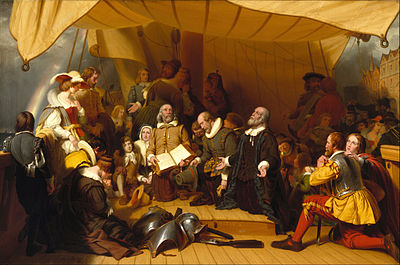

Christopher Columbus
1492 · Genoa/Spain · Atlantic
Sailed west to reach Asia — found the Americas instead. Four voyages between 1492–1504. Never acknowledged he'd found a new continent. His "discovery" (Indigenous peoples had been there 15,000 years) triggered the Columbian Exchange — the largest biological event since the Ice Age.
Vasco da Gama
1498 · Portugal · Africa to India
First European to reach India by sea (rounding Africa's Cape of Good Hope). His route to the East broke the Arab monopoly on spice trade and made Portugal Europe's richest nation. His second voyage carried 20 ships and cannon — inaugurating European maritime imperialism in Asia.
Ferdinand Magellan
1519–1522 · Portugal/Spain · Circumnavigation
Led the first expedition to circumnavigate the globe — though he died in the Philippines. His captain Elcano completed the journey with 18 survivors of 270. Proved the Earth was round and vastly larger than believed. Named the Pacific Ocean ("peaceful sea").
Henry the Navigator
1394–1460 · Portugal · Patron of Exploration
Never sailed himself, but funded and organized systematic exploration of Africa's coast. Established a school of navigation at Sagres. His captains discovered Madeira, the Azores, and Cape Verde, setting the stage for the Age of Exploration.
Hernán Cortés
1519–1521 · Spain · Conquest of Mexico
Conquered the Aztec Empire with 600 men, disease, and clever alliances with Aztec enemies. Burned his own ships to prevent retreat. His conquest made Spain the world's wealthiest empire. Sent enormous quantities of gold and silver back to Spain.
Francis Drake
1577–1580 · England · Privateer & Explorer
Second navigator to circumnavigate the globe and the first to command the voyage throughout. Raided Spanish ports and treasure ships with royal backing (a "privateer"). His success marked England's challenge to Spanish maritime supremacy.